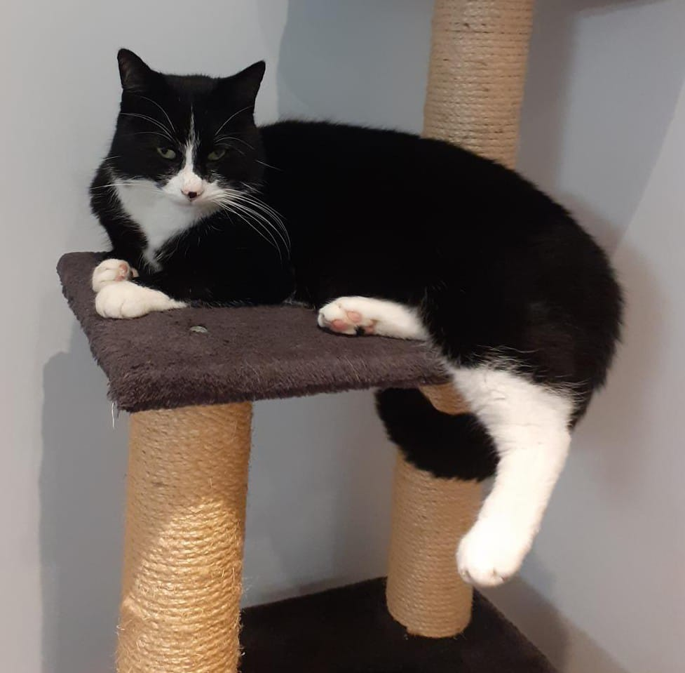
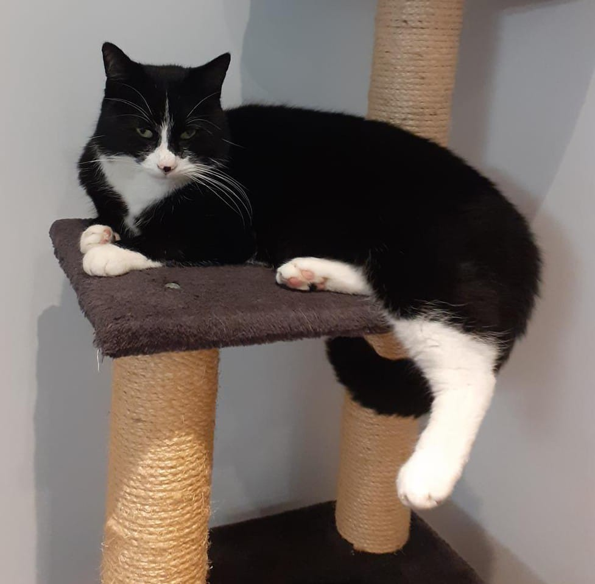

About Pawsome Pet Taxi
My name is Mandy. I am a fully qualified and registered Veterinary Nurse with over 30 years experience.
I began my Veterinary Nursing career in 1993 at a local practice where I still work on a part-time basis. I have first-hand experience on the difficulties pet owners have getting their animals to and from the Vets. Not many Taxi drivers are happy having animals in their cars, so this is where the idea of Pawsome Pet Taxi came about.
I hold a DEFRA Animal Welfare and Transport License; a current DBS certificate and I am fully insured for your peace of mind and your pet's protection.

As a pet owner myself I know how important it is knowing your pets are in safe hands. I currently own a beautiful yellow Labrador called Lexi, who I adore. She is kept in her place by Ozzy, a black and white rescue cat who most definitely is the Boss and will quite often give Lexi a box on the nose!
 
